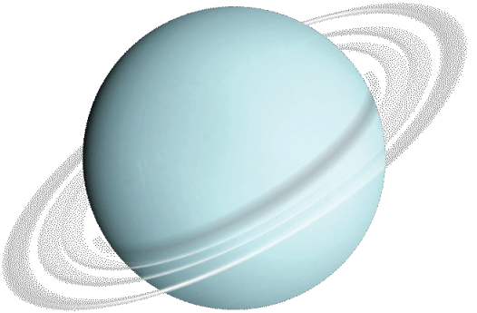

Уран
Седьмая планета Солнечной системы

🔵 Об Уране
Уран — седьмая планета от Солнца и один из четырёх газовых гигантов Солнечной системы. Его атмосфера состоит в основном из водорода, гелия и метана.
Уран имеет необычный наклон оси вращения — около 98 градусов. Поэтому кажется, что планета вращается почти лёжа на боку.
📏 Размер
Диаметр Урана — около 50 724 км. Это третья по размеру планета Солнечной системы.
☀️ Расстояние от Солнца
Среднее расстояние до Солнца составляет около 2,87 млрд км. Свет идёт до Урана примерно 2 часа 40 минут.
⏱ Год
Один оборот вокруг Солнца занимает около 84 земных лет. Поэтому времена года на Уране очень длинные.
🌡 Температура
В верхних слоях атмосферы температура может опускаться примерно до −224 °C, что делает Уран одной из самых холодных планет.
🌙 Спутники
У Урана известно 28 спутников. Самые крупные — Титания, Оберон, Умбриэль, Ариэль и Миранда.
💍 Кольца
У Урана есть 13 известных колец. Они намного темнее и менее заметны, чем кольца Сатурна.